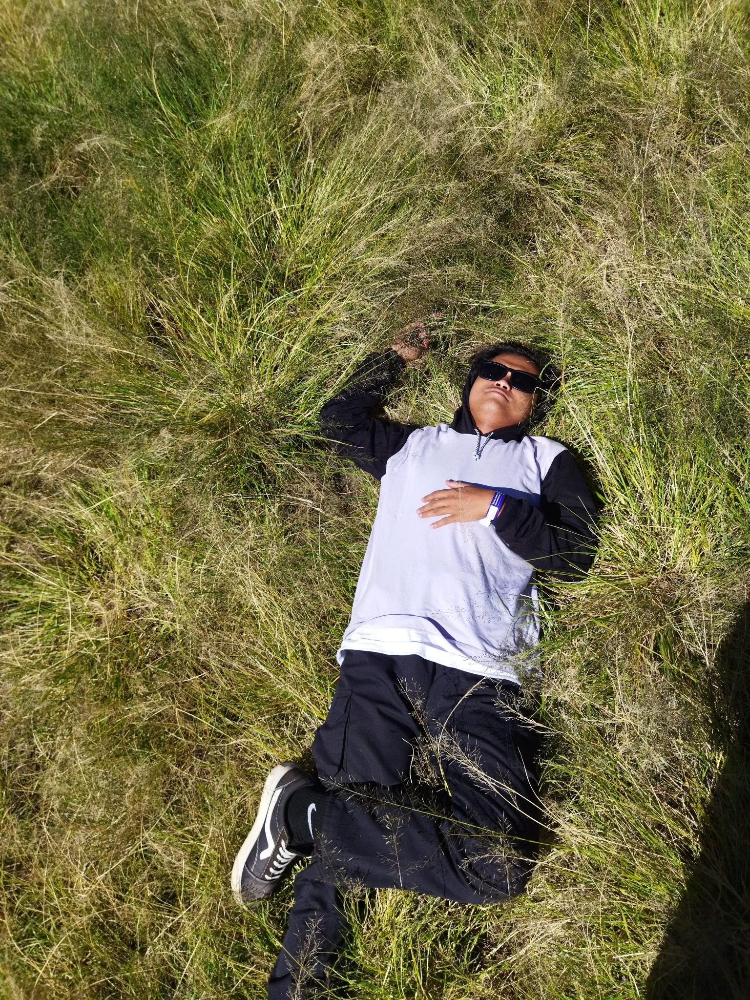

Saya seorang desainer dan videografer yang senang mengubah ide menjadi karya visual yang menarik. Saya berfokus pada desain kreatif, pengambilan gambar, serta editing video untuk menyampaikan cerita dan pesan dengan lebih kuat.
Bagi saya, setiap visual punya cerita. Saya selalu terbuka untuk belajar, berkolaborasi, dan menciptakan karya yang berkesan.
Hubungi Saya
Pengambilan gambar, komposisi, dan visual storytelling
Editing, penyusunan alur, transisi, dan color grading
Mengolah ide menjadi desain visual yang komunikatif
Menciptakan konsep dan menangkap momen yang bercerita
Video dengan komposisi gambar, suasana, dan alur visual untuk menghadirkan cerita yang menarik.
Proses menyusun footage, audio, transisi, dan warna agar menjadi video yang utuh dan nyaman ditonton.
Karya desain grafis dengan perhatian pada tipografi, warna, komposisi, dan identitas visual.